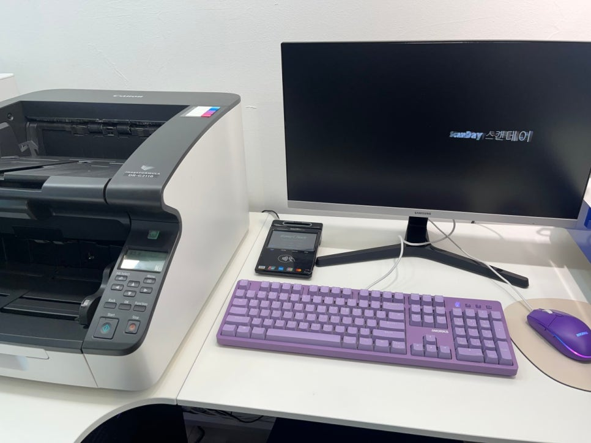
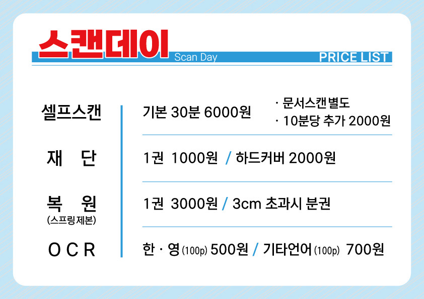

안녕하세요! 왕십리 셀프 북스캔, 스캔데이입니다~~~♥
매장 방문하시기 전에 "그래서 내 전공책 다 스캔하면 도대체 얼마라는 거야?" 하고 곤란하셨던 적 많으시죠?
타 업체들처럼 '페이지당 O원!'이라고 하면 계산하기 편할 것 같지만, 막상 두꺼운 전공책을 맡기려다 보면 비용이 눈덩이처럼 불어나서 깜짝 놀라실걸요~?
복잡한 가격표 때문에 정보 찾기를 포기하고 나가시는 일이 없도록, 오늘은 저희 스캔데이만의 특별한 요금제와 투명한 가격 정보를 처음부터 끝까지 숨겨진 비용 없이 투명하게 안내해드리려 합니다 !!
타 업체와는 다른 스캔데이! 스캔데이는 '시간제 대여 공간'
저희 스캔데이는 스캔본을 낱장으로 계산하는 곳이 아니라, 고객님들께 고성능 스캐너를 통째로 빌려드리는 '스캐너 대여 공간'이랍니다.
페이지당 요금 대신 30분당 6,000원 이라는 시간제 요금을 적용하고 있는데요. "시간제면 내가 손이 느려서 손해 보는 거 아닐까?" 걱정하실 필요 전혀 없습니다! 저희 매장의 스캐너는 속도가 아주 빨라서, 30분만 대여하셔도 무려 최대 10권의 책을 스캔하실 수 있어요.
(책을 놓아드리고, 잘라드리고 하는 부수적인 작업은 직원이 전부~~ 해줄거라 걱정 NO!!!)

스캔데이 요금 총정리 (요점만! 간단히)
계산기를 두드릴 필요 없이, 딱 세 가지만 기억하시면 되는데요!
- 스캐너 대여 비용: 기본 30분에 6,000원
- 재단 비용 (책 깔끔하게 자르기): 권당 1,000원
- 스프링 복원 비용 (스캔 후 다시 묶기): 권당 3,000원

왜 1권보다 '여러 권'을 가져오는 게 무조건 이득일까요?
이게 바로 오늘 글의 핵심입니다! 권수가 많을수록 압도적인 이득! 두꺼운 전공책이나 스캔할 자료가 많다면?
만약 딱 1권만 스캔하고 복원까지 하신다면 대여료 6,000원에 재단 1,000원, 복원 3,000원을 합쳐 기본 1만 원이 나옵니다. 비싸다고 느끼시나요~~?
하지만 10권을 한꺼번에 가져오신다면 이야기가 완전히 달라지죠~!
10권을 스캔하셔도 30분 안에 끝난다면 스캔 비용은 여전히 6,000원으로 고정입니다! 여기에 추가되는 것은 오직 책을 자르는 재단 비용과 스프링 복원 비용뿐이죠. 책이 늘어난다고 해서 스캔 비용이 페이지 수에 비례해서 무한정 늘어나지 않기 때문에, 페이지당 요금을 내는 곳보다 비용을 획기적으로 아끼실 수 있답니다~~
친구들 전공책까지 싹 다 모아서 가져오시면~~ 그야말로 '가성비'를 경험하실 수 있겠죠!